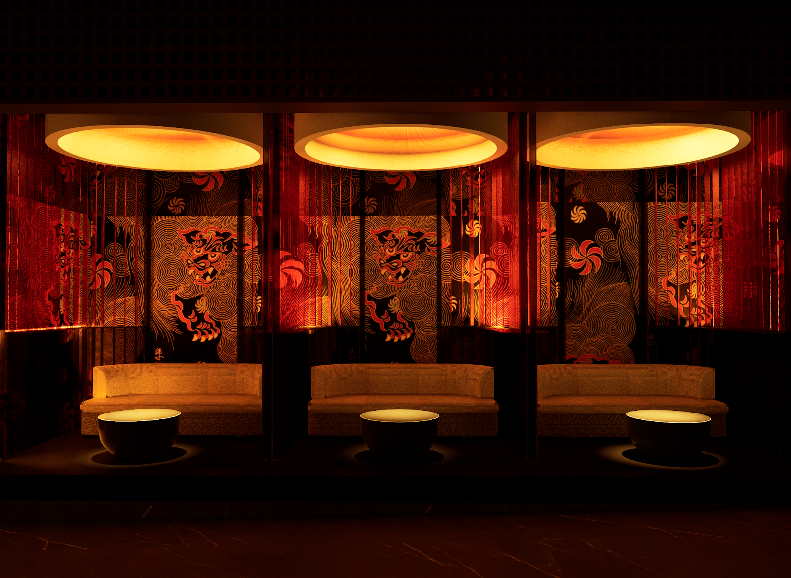
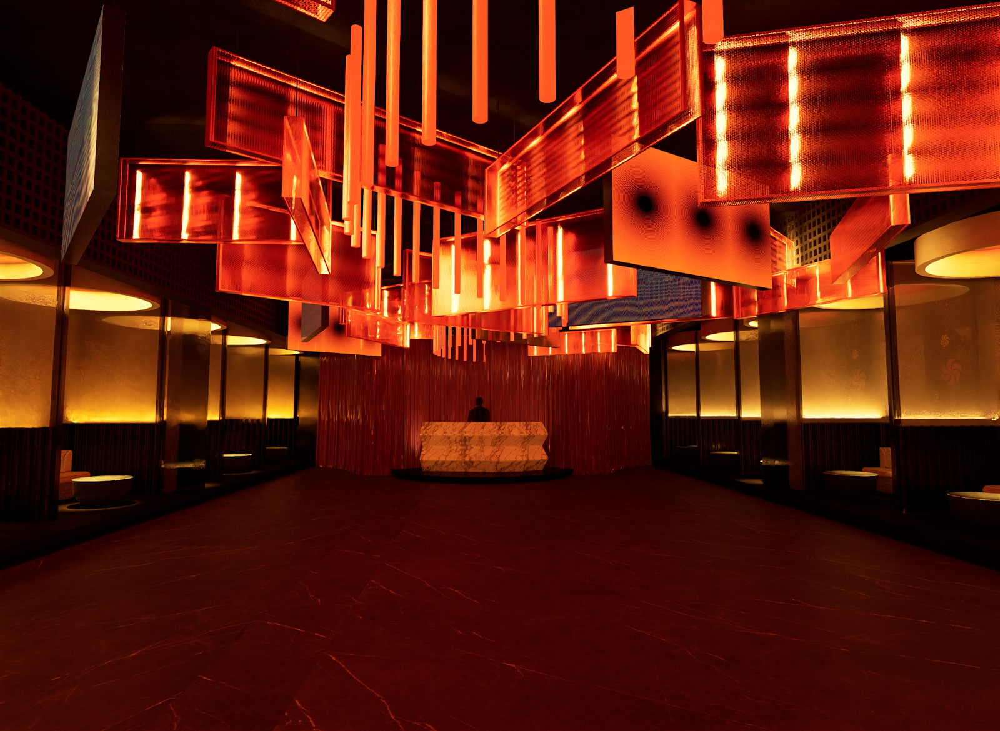
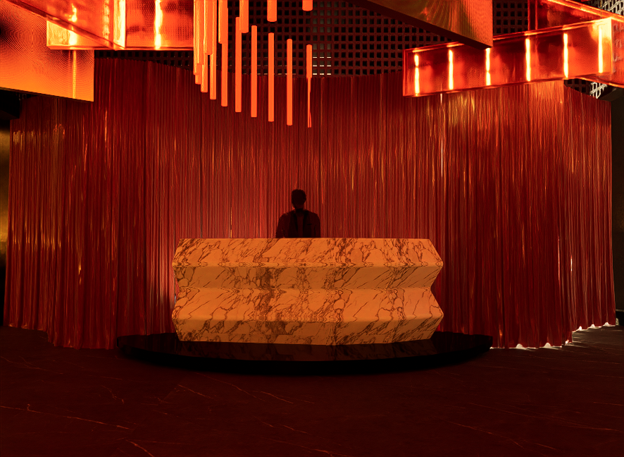
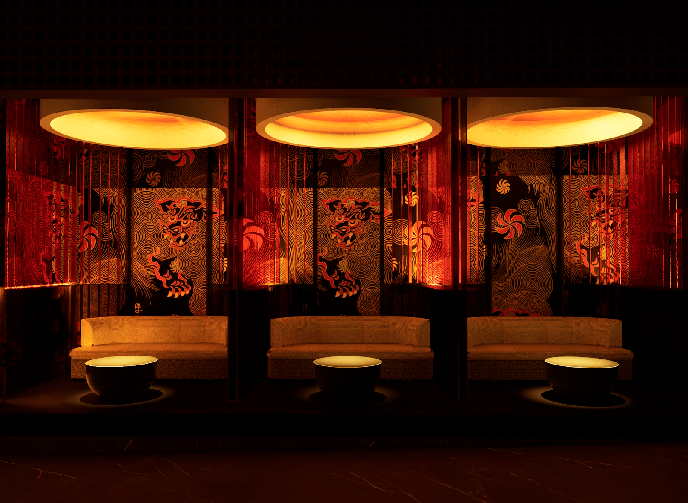
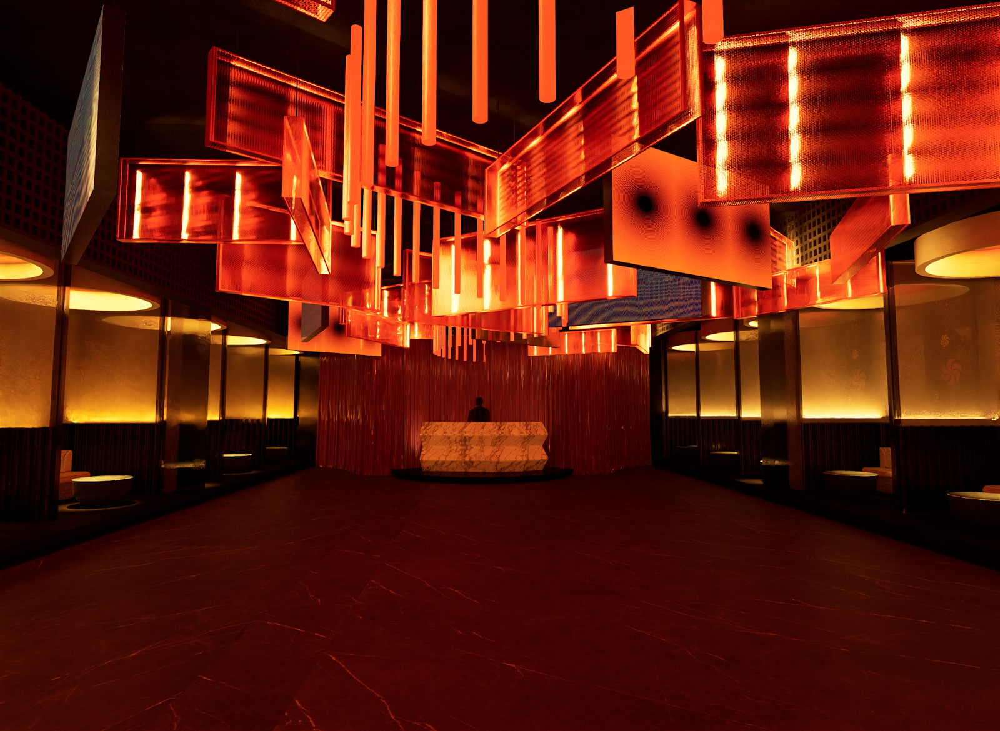
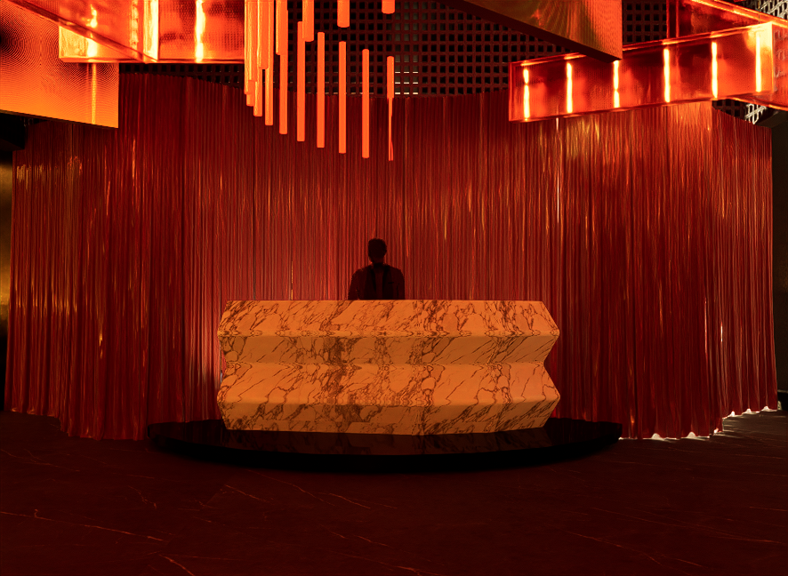
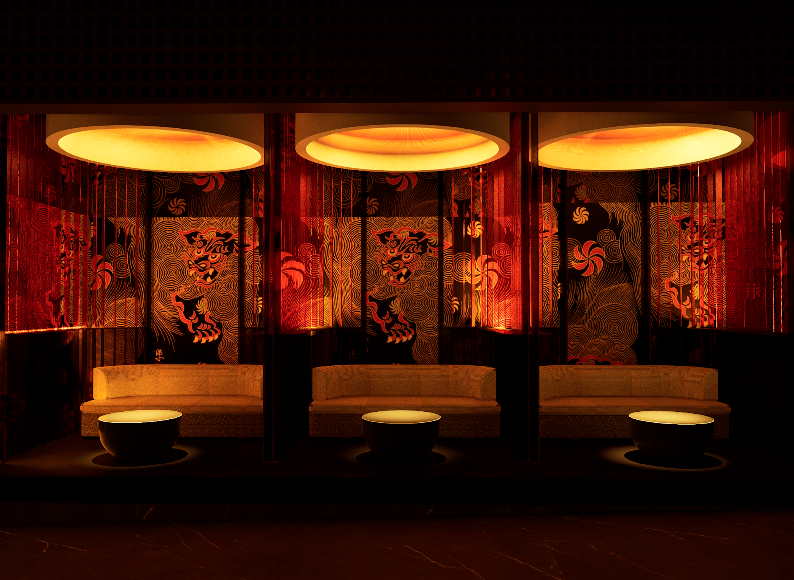
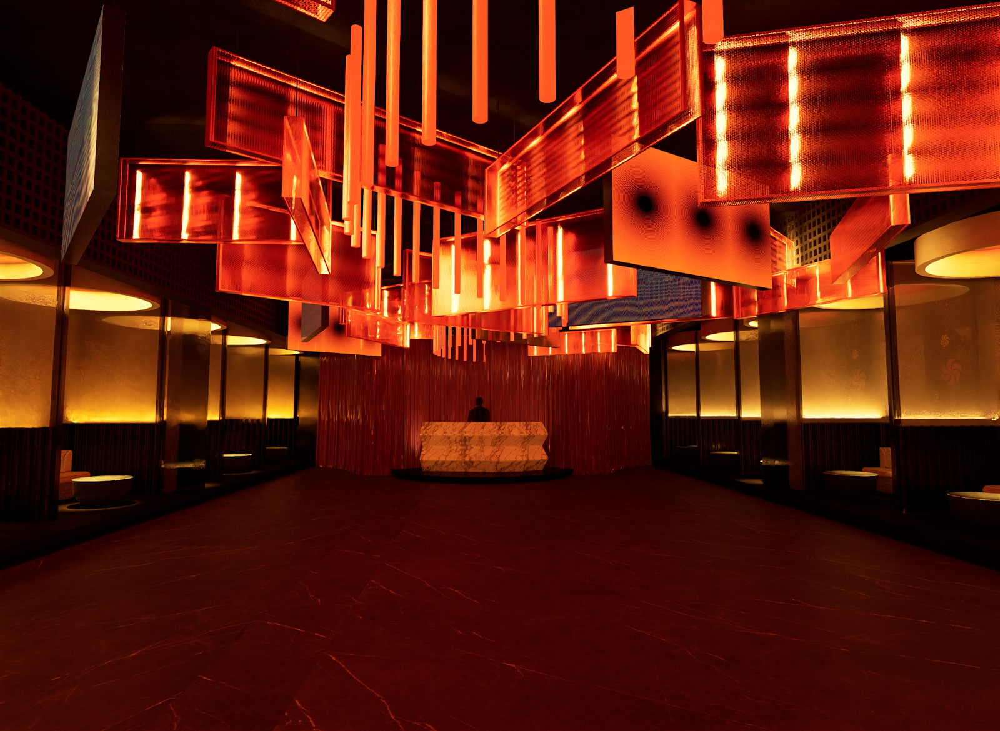
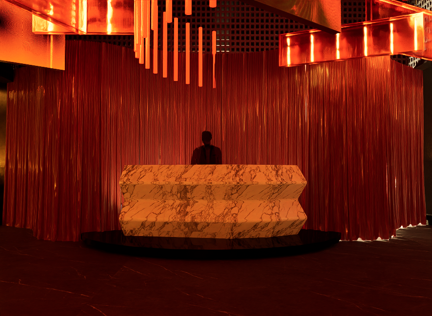

Tokyo
CATEGORÍA: NIGHTCLUB
UBICACIÓN: BUENOS AIRES, ARGENTINA
AÑO: 2024
SUPERCICIE: 200 M2
Tokyo Nightclub presenta un concepto dual que fusiona la serenidad y el misterio de los barrios japoneses con la energía vibrante y futurista de la metrópolis. En el exterior, luminarias cálidas enmarcan los accesos, evocando la calma y la luz tenue de las calles japonesas, donde la transparencia y la opacidad se combinan para generar una atmósfera de misterio y descubrimiento. Al cruzar el umbral, los visitantes son transportados a un interior inspirado en la estética urbana y futurista de Tokio, con líneas limpias y materiales modernos. Una iluminación de neón estratégicamente distribuida inunda el espacio con una energía dinámica que emula la vida nocturna vibrante de la ciudad, ofreciendo una experiencia sensorial única e inmersiva.


